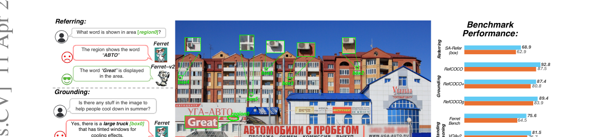
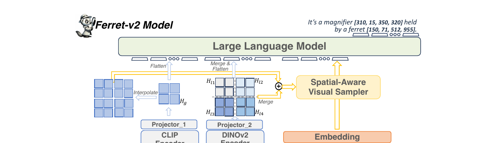
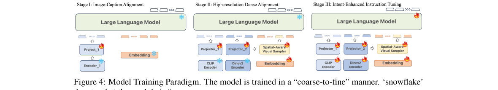

Ferret-v2: An Improved Baseline for Referring and Grounding with Large Language Models

上一篇 Ferret 解决了"圈哪问哪"的输入,但它的眼睛被卡在 336×336——小物体、屏幕文字、密集场景一律糊成一团。Ferret-v2 干的就一件事:在不丢全局推理能力的前提下,把分辨率拉上去。
1. 出发点 (Motivation)
Ferret 用混合区域表示统一了 referring 和 grounding,很强。但有个硬伤:它用的视觉编码器是预训练好的 CLIP-ViT-L/14,输入分辨率固定在 336×336(很多 MLLM 甚至 224)。这个分辨率一卡,精细视觉理解就废了——
- 小区域里的文字看不清(Fig. 1 的 "Great" 被认成 "ABTO");
- 密集场景里的小物体糊成一片;
- OCR、密集检测这类任务直接拉胯。
但简单粗暴地提分辨率又有代价:已有的"任务专用高分辨率 MLLM"要么过于复杂,要么在传统 MLLM 基准上表现反而变差。于是论文盯住一个核心矛盾:
怎么让 MLLM 在精细视觉任务上变强,又不牺牲它的全局推理能力?
Ferret-v2 从三个方向回答:更高分辨率的缩放策略、多粒度视觉编码、训练配方。选 Ferret 当底座,因为它有两个别人没有的优点——指代/定位互益、且支持自由形状区域。
2. 方法 (Method)

2.1 先做对照实验：any-resolution 完胜 direct upsampling
提分辨率有两条主流路线,论文先做了控制实验比个高下:
- Direct upsampling(直接上采样):把 CLIP 的位置编码插值到更高分辨率(如 448×448),微调时让整个 ViT 适应新分辨率。
- Any resolution(任意分辨率):预定义一组网格(最多 6 格,如
{1x1, 1x2, ..., 2x3}及其转置),给定图先选一个最贴合原图宽高比、最小化浪费的网格,把图切成若干子块,每个子块单独过 CLIP,再加一张缩小的全局图。
结论很干脆:any-resolution 在 ROC / REC / TextVQA / Ferret-Bench 四个任务上全面胜出。论文给的解释很关键:
direct upsampling 强迫 ViT 适应它从没见过的高分辨率(token 长度暴增),而微调数据(1.3M)远小于 CLIP 预训练数据(400M),会破坏预训练知识。any-resolution 把大图切成子块,每个子块的 token 长度和 CLIP 预训练时几乎一样,所以预训练知识保住了。
选最优网格的逻辑——在"有效分辨率最大"和"浪费分辨率最小"之间取舍——代码里就是一段直白的遍历:
repo/ferretui/ferretui/mm_utils.py:L13-L40 — 选择最贴合原图、浪费最少的网格分辨率(any-res 核心)
def select_best_resolution(original_size, possible_resolutions):
original_width, original_height = original_size
best_fit = None
max_effective_resolution = 0
min_wasted_resolution = float('inf')
for width, height in possible_resolutions:
scale = min(width / original_width, height / original_height)
downscaled_width, downscaled_height = int(original_width * scale), int(original_height * scale)
effective_resolution = min(downscaled_width * downscaled_height, original_width * original_height)
wasted_resolution = (width * height) - effective_resolution
if effective_resolution > max_effective_resolution or \
(effective_resolution == max_effective_resolution and wasted_resolution < min_wasted_resolution):
max_effective_resolution = effective_resolution
min_wasted_resolution = wasted_resolution
best_fit = (width, height)
return best_fit
切块时,总是把一张缩小的全局图拼在子块前面([global] + patches),这样模型同时拿到"全局语义"和"局部细节":
repo/ferretui/ferretui/mm_utils.py:L138-L153 — 选最优分辨率 → 切块 → 全局图拼在最前
best_resolution = select_best_resolution(image.size, possible_resolutions)
image_padded = resize_and_pad_image(image, best_resolution, is_pad=False)
patches = divide_to_patches(image_padded, processor.crop_size['height'])
...
image_original_resize = image.resize((processor.size['shortest_edge'], processor.size['shortest_edge']))
image_patches = [image_original_resize] + patches # 全局缩略图 + 高分辨率子块
⚠️ 这段 any-resolution 代码来自仓库里的 Ferret-UI 模块(同组、同期、共享 any-res 配方)。Ferret-v2 自己的双编码器(CLIP+DINOv2)+ 三阶段训练代码并未在
apple/ml-ferret开源——详见 §4。
2.2 多粒度视觉编码：CLIP 管语义，DINOv2 管细节
切块后冒出一个新问题:全局图和局部块的"粒度"不一样——全局图看到整个场景但粗糙,每个局部块只看到一部分但精细。用同一个编码器硬编,效果打架。
Ferret-v2 的解法:两路不同的编码器各管一摊。
—— 翻译：全局低分辨率图 I_g 交给 CLIP(F_g),局部高分辨率块 I_li 交给 DINOv2(F_li);两路各自再过一个独立的 MLP 投影层。为什么分工:CLIP 用图文对比学习,擅长抓"这张图讲了啥"的语义,但忽略像素细节;DINOv2 用自监督(图级+块级),擅长抓形状、纹理这种局部细节。一个看大局,一个看细节。
2.3 any-resolution referring：两路特征逐通道相加
区域指代要靠空间感知视觉采样器(沿用 Ferret)抽连续特征。但高分辨率下,光靠全局图的特征抽不准小物体。Ferret-v2 把全局语义和局部细节融合后再抽:先把局部块特征图按原空间排布拼成大图 \(H_l'\),把全局特征上采样到同尺寸 \(H_g'\),然后逐通道相加:
—— 翻译：把"局部细节大图"和"上采样后的全局语义图"在每个像素位置、每个通道上直接加起来,得到一张既有强语义、又有局部细节的高分辨率特征图 H_a。再把 H_a 喂给视觉采样器抽区域特征。说白了:让每个位置同时记住"我是什么(语义)"和"我长什么样(细节)"。
合并的工程实现就是按网格形状 reshape、再按空间排布展平拼接(这段在 Ferret-UI 模块里是 CLIP 单路版本):
repo/ferretui/ferretui/model/ferret_arch.py:L618-L638 — 局部块特征按网格排布合并,再与全局特征拼接
if image_aspect_ratio == 'anyres':
num_patch_width, num_patch_height = get_anyres_image_grid_shape(
image_sizes[image_idx], self.config.image_grid_pinpoints, self.get_vision_tower().config.image_size)
image_feature = image_feature.view(num_patch_height, num_patch_width, height, width, -1)
...
image_feature = image_feature.permute(0, 2, 1, 3, 4).contiguous()
image_feature = image_feature.flatten(0, 3)
image_feature = torch.cat((base_image_feature, image_feature), dim=0) # 全局特征 + 合并后的局部特征
2.4 三阶段训练：coarse-to-fine

相比 Ferret 的两阶段(图文对齐 + 指令微调),v2 在中间插了一个全新的 Stage II:
-
Stage I — 图文对齐:1.4M 图文对,只训 projector,低分辨率,冻结编码器和 LLM。视觉采样器不参与(没有 referring 数据)。
-
Stage II — 高分辨率密集对齐(关键创新):发现"图级对齐"和"指令微调"之间有断层——下游任务需要精细的空间感知。于是设计两类任务把图里每一个局部物体都和语义对齐:
- 密集指代 (Dense Referring):一次性把图里所有物体的区域列出来,问它们各自的类别;
- 密集检测 (Dense Detection):按光栅扫描顺序(从上到下、从左到右)定位列出所有物体,减少随机性、注入空间秩序。
用密集标注的 LVIS(平均每张图约 10 个物体,而指令微调阶段每样本通常只有 1-2 个)。DINOv2 的 projector 从 CLIP 的 projector 初始化以求稳定;冻结两个编码器和 LLM,只训两个 projector + 采样器。
-
Stage III — 意图增强指令微调:全部放开。用 GRIT + VQA + OCR 数据。两个额外技巧:(i) 数据统一——用 GLIPv2 检测器和 OCR 模型把 VQA/OCR 文本里的名词自动框出来,做成带定位的数据;(ii) 任务泛化——在需要定位的任务后面加提示 "Include the coordinates for each mentioned object." 消歧。
3. 结论 (Key findings)
① 小物体指代暴涨。 指代物体分类 (ROC),Ferret-v2-7B vs Ferret-7B:
| 数据集 | 类型 | Ferret-7B | Ferret-v2-7B |
|---|---|---|---|
| LVIS | Box | 79.42 | 86.59 |
| LVIS | Free-form | 69.77 | 76.13 |
| SA-refer(野外小物体) | Box | 62.99 | 68.83 |
| SA-refer | Free-form | 57.74 | 62.07 |
SA-refer 是专门用 SA-1B 高分辨率图 + 小物体标注做的"in-the-wild"测试集——v2 在这上面领先最多,正是高分辨率的功劳。
② 定位逼近专用检测器。 REC (Acc@0.5),Ferret-v2-7B 在 RefCOCO val 92.79(Ferret-7B 87.49)、RefCOCOg val 89.42(83.93),超过 Qwen-VL-7B、SPHINX-2k、MiniGPT-v2,已接近专用检测器 Grounding-DINO-L 的水平。
③ Ferret-Bench 大幅提升。 平均 75.6 vs Ferret-7B 的 64.5,指代描述、指代推理、对话中定位三项全面提高。
④ any-resolution > direct upsampling 被实证。 控制实验(Fig. 2)显示 any-res 在四个任务上一致更优;且 any-res 下放开编码器训练总是更好,而 direct upsampling 下冻结编码器有时反而更好——印证"别破坏 CLIP 预训练知识"的判断。
4. 实现细节 (Implementation notes)
① v2 的核心代码(双编码器 + 三阶段)未开源。 apple/ml-ferret 仓库只有 Ferret v1 和 Ferret-UI 两个模块,没有 Ferret-v2 的 CLIP+DINOv2 双编码器、§2.3 的逐通道融合 \(H_a = H_l' + H_g'\)、以及三阶段训练脚本。本文的 any-resolution 代码引用自同组同期的 Ferret-UI 模块(共享 any-res 配方,但它是 CLIP 单编码器,没有 DINOv2 那一路)。所以 §2 的双编码器部分只能对照论文公式,代码层面无法逐行验证——按诚实原则在此标注。
② any-resolution 的 token 上限是 1280。 论文脚注:token 数随输入分辨率动态变化,但最大 1280;选 448 作为目标分辨率是权衡计算开销。网格配置 {1x1, 1x2, 1x3, 1x4, 1x5, 1x6, 2x2, 2x3} 及其转置,最多 6 格。
③ 空间感知视觉采样器直接复用 v1。 v2 没动采样器(FPS+KNN+融合+池化那套),只是改了喂给它的输入——从"全局特征"变成"融合后的高分辨率特征 \(H_a\)"。采样器实现见 Ferret 精读的 ferret_arch.py:GeoRegionSampler。
④ DINOv2 projector 从 CLIP projector 初始化。 这是个稳定性 trick(§3.4 Stage II):新加的 DINOv2 路 projector 不是随机初始化,而是拷贝 CLIP projector 的权重起步,避免训练早期两路特征尺度差太多。
⑤ "数据统一"靠外部模型伪标注。 Stage III 用 GLIPv2(开放词表检测器)和一个 OCR 模型 把 VQA/OCR 数据里的名词/文字自动框出来,变成带坐标的训练数据。好处是把纯文本任务和区域任务对齐;隐患是伪标注的误差会传进训练(见 §5)。
⑥ 投影层从 linear 升级为 2 层 MLP。 §3.2 提到,相比 Ferret 的单层 linear projector,v2(及其对照实验)统一改用两层 MLP——这是 LLaVA-1.5 带起来的小改动,但对高分辨率下的对齐有帮助。
5. 批判性总结 (Critical assessment)
Strengths
- 不是拍脑袋调分辨率,而是先做对照实验:direct upsampling vs any-resolution 的控制实验(含冻结/放开编码器的交叉对比)给出了"为什么 any-res 更好"的机理解释——保护预训练知识。这种"先分析再设计"的严谨度是论文最大亮点。
- 双编码器分工有清晰 motivation:CLIP(对比学习→语义)+ DINOv2(自监督→细节)不是堆料,而是针对"全局 vs 局部粒度差异"对症下药。
- Stage II 是真正的新东西:用 LVIS 密集标注做"每个局部物体都对齐"的高分辨率密集对齐,填补图文对齐和指令微调之间的断层。
- 效果实打实:小物体/OCR 大涨,REC 逼近专用检测器,且不牺牲全局推理(VQAv2/Ferret-Bench 同涨)。
Limitations / open questions
- 输出仍是框,不是掩码:v2 把输入侧的分辨率问题解决得很好,但输出还是 bounding box 坐标——和 Ferret 一样,要像素级掩码还得走 LISA→GLaMM→Sa2VA 那条线。v2 没碰这个维度。
- 代码未完全开源:双编码器 + 三阶段是论文的核心,却不在公开仓库里,复现门槛高、可验证性差。
- 推理变重:any-res 最多 1280 视觉 token + 两个 ViT(CLIP & DINOv2)并行编码,比 v1 重不少;对延迟敏感的场景不友好。
- 伪标注误差传递:Stage III 的"数据统一"依赖 GLIPv2/OCR 自动框名词,这些外部模型的错误会直接污染训练数据。
- DINOv2 projector 从 CLIP 初始化是个未充分论证的工程 trick——两个编码器特征空间本就不同,拷贝初始化为何有效、是否最优,论文没深究。
When to use / not use
- 适合:需要看清小物体、屏幕文字、密集场景的指代/定位(文档理解、UI/截图、遥感、细粒度 VQA);想要一个不牺牲全局推理的高分辨率 grounding 底座。
- 不适合:要像素掩码输出(用 LISA 线);算力/延迟极敏感(双 ViT + 多 token 重);只要纯检测框(专用检测器更省)。
谱系衔接：Ferret → Ferret-v2 → Ferret-UI
把三篇放进一条线看最清楚。
- 输入侧分辨率主线:Ferret(混合区域表示,固定 336px,框输出)→ Ferret-v2(any-res + CLIP/DINOv2 双编码器 + 三阶段,高分辨率密集感知)→ Ferret-UI / Ferret-UI 2(
2404.05719/2410.18967,把 any-res 配方下放到手机/多平台 UI 屏幕,喂养了 GUI agent grounding 方向,见 vlm-grounding-2025)。 - 和 LISA 的对偶仍在:v2 把"圈哪问哪"的输入做到了高分辨率,但输出依旧是坐标框;LISA 那条"
<SEG>→SAM 出掩码"的输出侧主线与之正交。真正两头都做到像素级的是 GLaMM / Sa2VA。 - 更大的潮流:any-resolution + 多编码器后来成为高分辨率 MLLM 的标配——LLaVA-NeXT、InternVL、Qwen2-VL 等都走了"切块 + 保留全局缩略图"的路子。Ferret-v2 是这股潮流里把它和区域指代/定位结合得最早、最系统的工作之一。
Further reading
- 前作:ferret-2023(混合区域表示 + 空间感知视觉采样器,本文的底座)。
- 输出侧对偶:lisa-2023(文本→掩码,
<SEG>embedding-as-mask)。 - 本站相关:vlm-grounding-2025(视觉-语言 grounding 教程,含 GUI/UI 线)。
讨论 / Comments
评论托管在本仓库的 GitHub Discussions, 需 GitHub 账号。